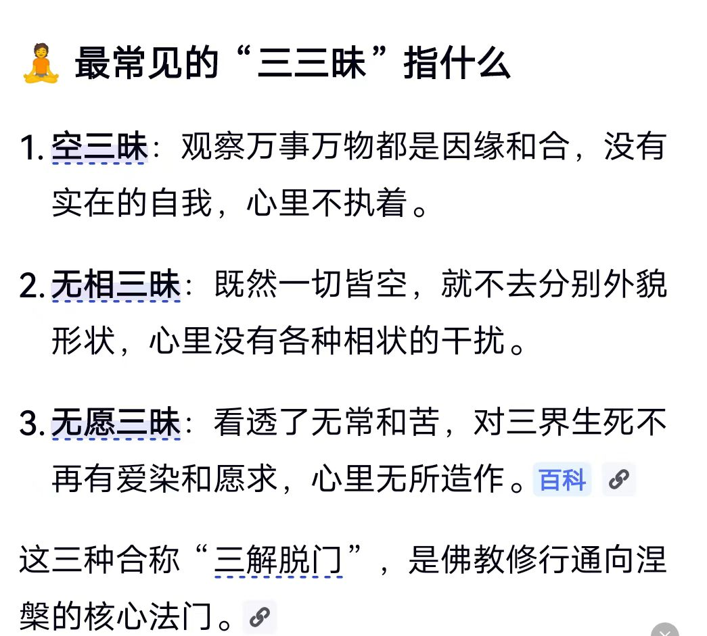
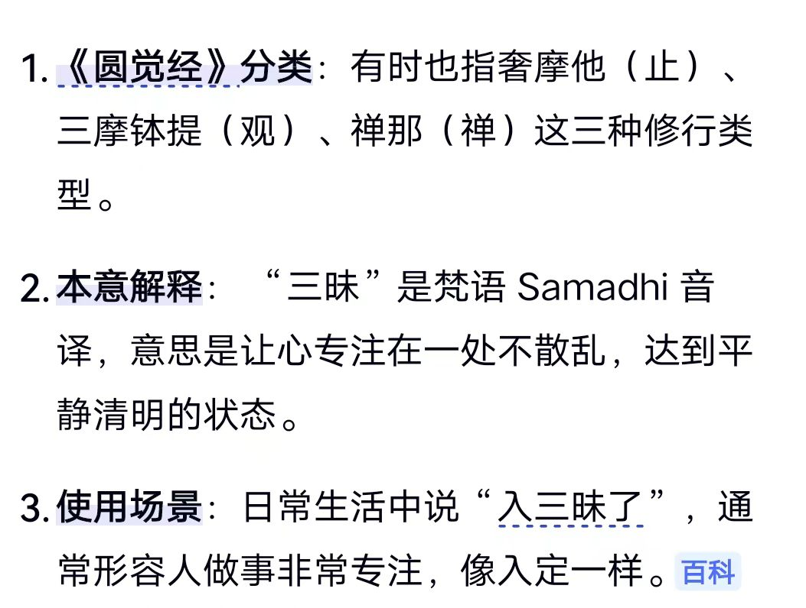
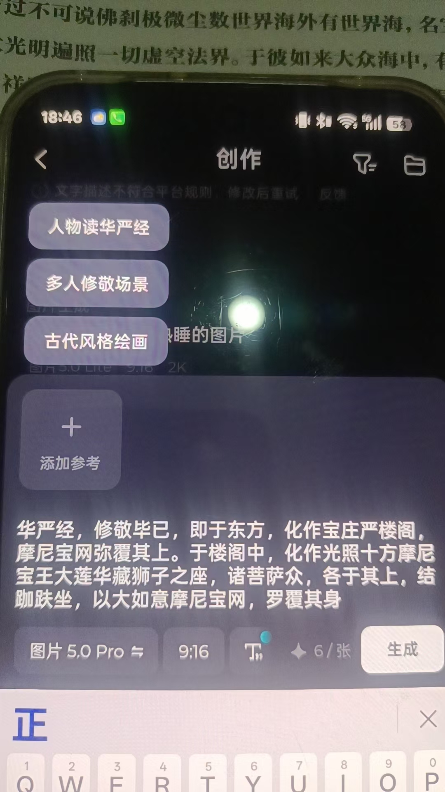

20260717华严经 全是心法 一句一像
修炼修行 原始对话记录

不代入“我”
华严经
博，大，精，深
原来某大师四个月没下床，这么严重
终于想到了身体素质修养
想到了也没用啊，不是不要能量吗，不打坐修炼吗
主要是不会
几个谁提能量跟谁拼命的大师
不是说理解了，而是受到了报应
[憨笑][憨笑][憨笑]这用词不当
[偷笑][偷笑][偷笑]宇宙充满了能量，大师不需要
大师开始让学员上体育课了
大师能量满满[偷笑][偷笑][偷笑]
明白原理的都明白的
佛，功德殊胜
全是心法，要在虚空成像
根本读不动，
一句一成像
这几天，看到那个抖抖书，知道书的大概内容，这功能几乎没什么用
学任何技术，没人要求走马观花
练就练那个盲读
不接触书本，别人拿着书，孩子一字一句，明确的读出来
咱们好多孩子成功了
一字一句挺难吧
不难[偷笑][偷笑][偷笑]
拍个视频看看[色][色][色]
约个时间，亲眼看看
[呲牙][呲牙]
有几个做到了？
能一字一句的估计看透身体，看透地脉，看祖坟也行了
论群不论个[憨笑][憨笑][憨笑]
[苦涩][苦涩][苦涩]
找矿，找石油没法实验，但看井，地下水脉，几个孩子百用百灵
视频怎么拍，都会有怀疑的
这样的孩子不多
我看华严经，全是画面
我感觉，把这些发给即梦，能做出视频来
说的很明白
我发一段试试
@紫鸢真人 有意念拍照，可否意念录像，直接把看到的发到手机视屏文件？
当然有
千里脑屏录像
孩子没见过，录的清清楚楚
还有字幕，音乐
不接触传到手机
但咱们的孩子，受保护
我只发视频，也没人相信[呲牙][呲牙][呲牙]
@紫鸢真人 我是说把你华严经看到的视屏录下来
软件能做的，还是尽量不使用超能力
有以前的经验，那肯定能
熔断钢针，修复钢针
以前艾米尔能熔断，修复，最近好像搜不到了
咱们的孩子，能做到
[憨笑][憨笑][憨笑]
我先发几句试试，我感觉行，
我想让儿子给我做视频
素材就用二师兄的微博记录
因为就是我的实际经历
名字就叫紫鸢真人传奇
[呲牙][呲牙][呲牙]
结果，儿子天天加班，没时间
哇，这个传统文化故事价值非常大，Ai短剧连载，可以赚广告费了
别人找不到素材
我这里有上万个
再跟儿子商议一下
前几天，他也想利用周末自己做，发到红果短视频
有了剧本，做AI短剧挺容易的
是的
问题是上万个素材都不重样
都是亲身经历
编是编不出来的
二师兄不会做短视频，以前的软件也不好用，做的非常生硬
浏览量就几个
[憨笑][憨笑]
只起了个记录大纲的作用
我做的还有几万，上百万浏览量
不过没时间

你看这一句，是不是全是画面
大如意摩尼宝网
罗覆其身
各种颜色的珠子，编制起来，穿在身上，光芒照耀十方
活的画面
这就是经里的心法
练心的，开智慧开眼开悟的
会读真读
念字没用
还行，大致就是这么个意思
珠子不仅点缀宝幢
还点缀到每个大觉身上
一部经，一句一个画面
这一页开头是《华严经》三个字。后面跟着，博，大，精，深。
然后是那句判断：全是心法，要在虚空成像。
我往下看。原来读不动。一句一成像。
就这么短。
中间夹着一段别的话，说有个大师四个月没下床，几个谁提能量跟谁拼命的大师，不是说理解了，是受到了报应。这属于页边的闲话，我读的时候笑了一下，又回到正文。
念字没用。会读真读。
页里给了一个例子。大如意摩尼宝网，罗覆其身。我起初只是念过去，念到"罗覆其身"，眼前没什么东西。师父把它拆开——各种颜色的珠子，编制起来，穿在身上，光芒照耀十方。活的画面。
珠子不仅点缀宝幢，还点缀到每个大觉身上。
我把这一句写在本子边。一颗一颗珠子，穿成网，覆在身上。这样一读，句子就立起来了。
页里还提到两样东西，都和这个话题挨着。一样是盲读。不接触书本，别人拿着书，孩子一字一句，明确地读出来。师父说咱们好多孩子成功了，又问，有几个做到了。另一样是意念拍照、意念录像，千里脑屏录像，孩子没见过，录得清清楚楚，还有字幕，音乐。
有人问，能不能把华严经看到的录下来。师父说，软件能做的，还是尽量不使用超能力。
页里最后又回到那句——珠子不仅点缀宝幢，还点缀到每个大觉身上。
我合上本子。读经这件事，原来的读法是念，这里的读法是看。一个字一个字看过去，字后面站着画面。念字没用，师父写得很直接。